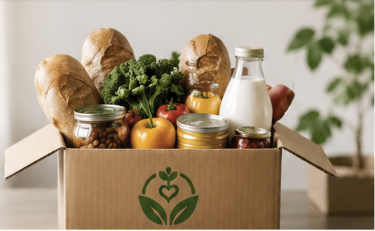
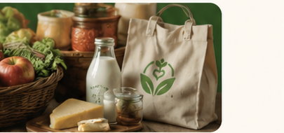

Food businesses
Share safe surplus that might otherwise go to waste.
Every day, food is left over for reasons that have nothing to do with its value. Without the right connection at the right time, it can end up in a dumpster instead of someone’s kitchen.
Real food. Real people. Real impact.
On one side, local businesses have surplus they need to move quickly. On the other, community organisations are looking for food they can put to use. In between is a gap: who has it, where is it, and can someone get there in time?
Nourish & Share gives food businesses a way to say, “We have food available,” and gives community organisations a place to answer, “We can use this.”
We focus on local, hyper-local coordination. Not another complicated distribution system—just a clearer way for extra bread, prepared meals, pantry goods, dairy, fruit, and groceries to reach people before the opportunity disappears.
Share safe surplus that might otherwise go to waste.
Helps connect both sides and makes coordination easier.
Discover and coordinate available food for their communities.
What if the bread that did not sell became breakfast somewhere else? That is the idea behind Nourish & Share.
See How It Works